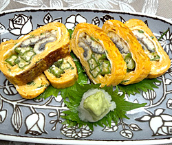

ウナギとオクラのだし巻き卵
- 調理時間： 15分
- （一人当たり）
- カロリー：369kcal
- たんぱく質：19.9g
- 脂質：28.2g
- 炭水化物：5.0g
- 塩分：1.7g


＜鶏卵3個分＞
- 鶏卵
- ３個
- ウナギの白焼き
- １/２本
- オクラ
- ２本
- 青ネギ
- 少々
- 植物油
- 適量
- おろし大根、ワサビ
- 適宜
- ・だし汁
- ５０ml
- ・砂糖
- 小さじ１
- ・みりん
- 小さじ１
- ・薄口醤油
- 少々
- ・塩
- 小さじ１/２
A


- オクラは縦１/２に切る。
青ネギは小口に切る。 - 卵をボウルに割り入れ、小口ネギ、Aの調味料を加えてよく混ぜる。
- うなぎの白焼きは600wの電子レンジで１分加熱し、適当なサイズに切る。
- 卵焼き用のフライパンに油を薄くひき、熱し、②の溶き卵の1/3を流し入れ、半熟状になったらウナギとオクラを乗せる。
卵をウナギごと巻きながらフライパンの端に寄せる。
残りの卵を2回に分けて流し込み、同様に巻く。 - 全体がきれいに巻けたら火を止め、形を整える。
食べやすいサイズに切り分け、おろし大根、ワサビを添える。
ウナギとオクラのだし巻き卵
ヒトの体は２０種類のアミノ酸から構成されており、食事から摂取しなければならない必須アミノ酸が９種類あります。その９種類の必須アミノ酸が必要とされる量を全て満たしているものが「良質のたんぱく質」と呼ぶのですが、中でも卵は、非常に質の高いたんぱく質をバランスよく含んでいます。ほぼ完全栄養食ですが、ビタミンＣと食物繊維が少ないので、野菜や海藻で補うとよいでしょう。